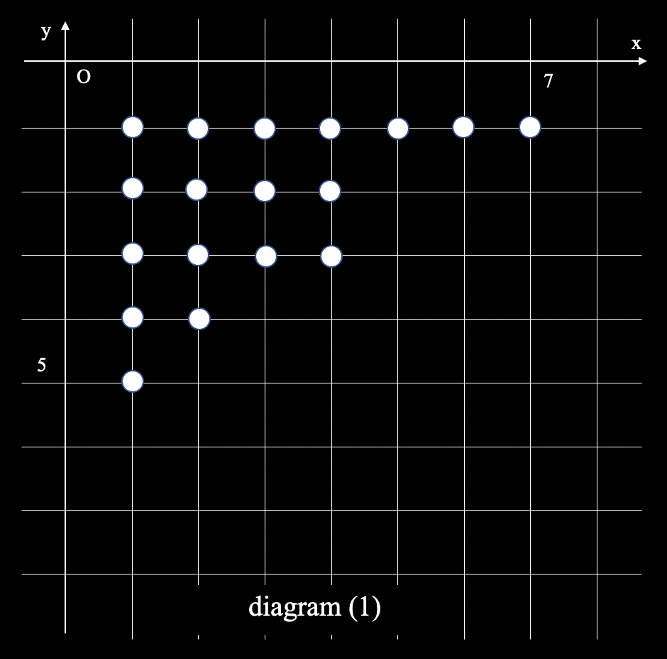
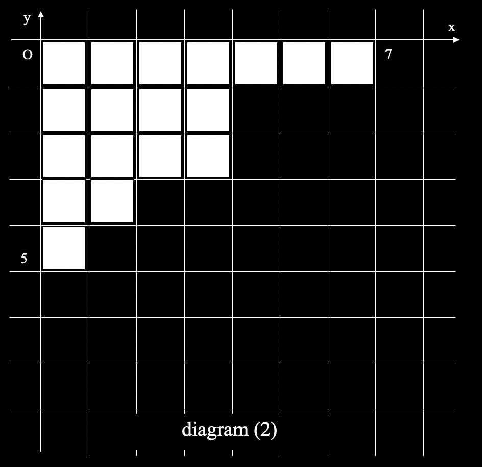
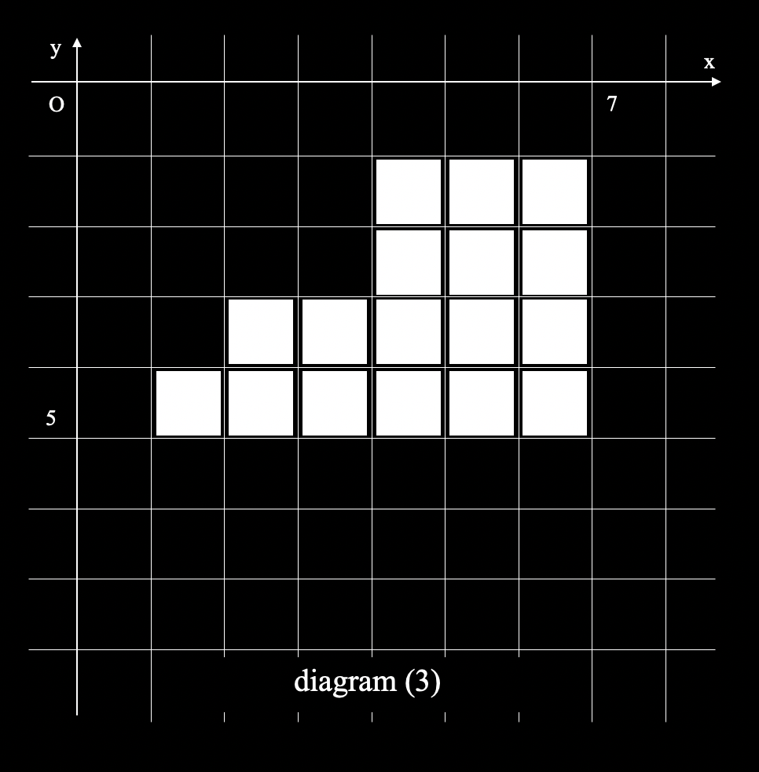
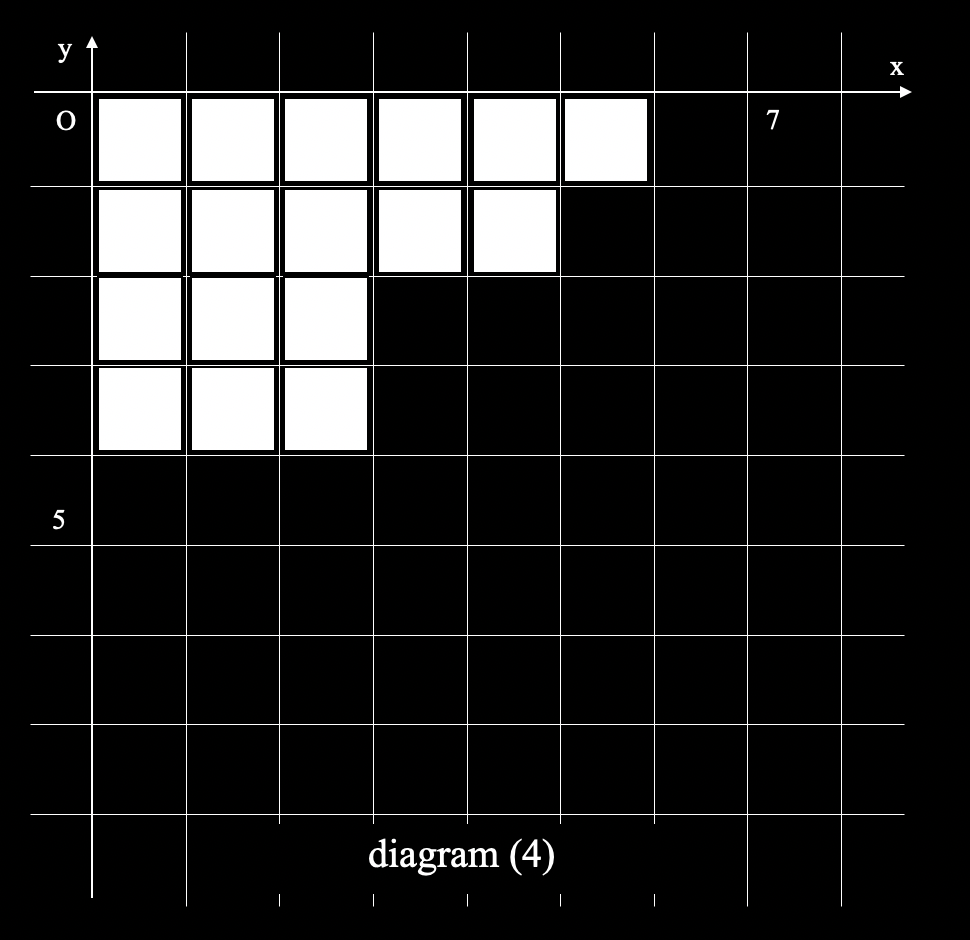

1. The value of the q-binomial coefficient
Before the calculation of the polynomial, we first have to consider the S(n,k) which is “staircase”. It satisfies the following proposition. Let P(i,j) be a element of the S(n,k).
1. S(n,k) is a set which contains lattice points.
2. Both i and j satisfies 1<=i<=(n-k) and 1<=j<=k.
3. S(i-1,j) is an element of the S(n,k). (i>=2)
4. The number of elements which satisfies j=J is larger than or equal to that of elements which satisfies j=J+1.
Let n be 12, and k be 5. The following diagram (1) is the example of the S(n,k).


If we substitute tiles for points, this diagram will be easier to understand(diagram (2)). It exactly seems a “staircase”. This is also called “Young diagram”.
Let C(n,k,i) be the patterns of the S(n,k) which contains i boxes or points.
In addition, let Q(n,k,i) be the coefficient of q
i in (n k)q.
C(n,k,i) is equal to Q(n,k,i). This fact is very important and useful as it allows us to take many approaches to calculate the polynomial which gives the q-binomial coefficient.
Theorem 1. C(n,k,i)=Q(n,k,i)
(prove)
When n=1, let the number of the staircases which contains 0 blocks be 1.
The number of patterns for placing the block as staircases is 1 as well.
These correspond to the value of (1 0)q and (1 1)q.
Focus on recurrence relations of C(n,k,i) and Q(n,k,i).
It is obvious from (2) that Q(n,k,i) satisfies the following equation (3).
\[
{
Q(n,k,i) = \\
\ \ Q(n-1, k, i-k)+Q(n-1, k-1, i) \ \ \ (i>=k) \ \ \ ……(3) \\
\ \ Q(n-1,k-1,i)\ \ \ (i < k) \ \ \ \ \ \ \
}
\]
Also, the following statements about C(n,k,i) are obviously true.
1. Staircases can be classified into two groups, one containing (1,k) and the other or not.
2. The number of the staircases which contain (1,k) is equal to the number of staircases with 1 less number of column and k less number of blocks.
3. The number of those which don't contain (1,k) is equal to the number of staircases with 1 less number of row.
The following equation holds because of the statement 2 and 3.
\[
{
C(n,k,i)= \\
\ \ C(n-1,k,i-k)+C(n-1,k-1,i)\ \ \ (i>=k) \\
\ \ C(n-1,k-1,i)\ \ \ (i < k)
}
\]
Q(n,k,i) and C(n,k,i) satisfies the same reccurence relation. Therefore, Q(n,k,i) is equal to C(n,k,i). ■
For the calculation of the q-binomial coefficients, we need to show the following lemma1 and lemma2.
Lemma 1. Q(n,k,i)=Q(n,k,k(n-k)-i)
(prove)
Think of the “reversal “of the deviation of i.
To reverse the deviation, remove all tiles, put tiles in all of the positions which the tile have not been put in (diagram(2) to diagram(3)).
Then rotate the whole diagram 180 degrees (diagram(3) to diagram(4)).
Let i be the number of tiles which were contained in the previous diagram.
New diagram which is created by the preceding process contains k(n-k)-i tiles.
By using these steps, the bijection from the deviation which contains i tiles to that which contains k(n-k)-i tiles was materialized.
Therefore C(n,k,i) is equal to C(n,k,k(n-k)-i). By using theorem 1, Q(n,k,i) is equal to Q(n,k,k(n-k)-i). ■


Lemma 2. Q(n,k,i-1) <= Q(n,k,i) (When i <= k(n-k)/2)
(prove)
Use the mathematical induction. As for n,k, consider n=N-1 and k=K-1 as already proven and they hold.
\[
{
Q(N,K, \tfrac{K(N-K)}{2}-1)=Q(N-1,K-1, \tfrac{K(N-K)}{2}-1)+Q(N-1,K,\tfrac{K(N-K-2)}{2}-1) \\
Q(N,K,\tfrac{K(N-K)}{2})=Q(N-1,K-1,\tfrac{K(N-K)}{2})+Q(N-1,K,\tfrac{K(N-K-2)}{2})
}
\]
If we use Lemma1 adequately, we can apply Lemma2 to each terms of the right side.
It is clear that Lemma2 holds when k=0 or i=-1. Therefore Lemma2 holds for all n,k and i.
■
By using these two lemmas, the following Corollary 1 is easily deduced.
Corollary 1. Q(n,k,i) is maximized when i is equal to k(n-k)/2.
We can prove the following theorem by using Corollary 1.
Theorem 2. Q(n,k,i) <=
nC
k
(prove)
From Corollary1, this theorem can be proven if we prove i=k(n-k)/2.
Use the matimatical induction. Let it hold when n=N-1 and k=K-1, K.
\[
{
Q(N,K,\tfrac{K(N-K}{2})=Q(N-1,K-1,\tfrac{K(N-K)}{2})+Q(N-1,K,\tfrac{K(N-K-2)}{2}) \\
< Q(N-1,K-1,\tfrac{(K-1)(N-K)}{2})+Q(N-1,K,\tfrac{K(N-K-1)}{2}) \\
< \binom{N-1}{K-1}+\binom{N-1}{K} \\
=\binom{N}{K}
}
\]
When k = 0, it cleary holds because Q(n,0,i) = 1 = nC0.
It also holds when i=0 because Q(n,k,0)=1 =< nCk.
Therefore Theorem 2 holds for all n,k and i.
Using theorem 2, Q(n,k,i) is equal to or less than nCk.
That means we can calculate the polynomial of the q-binomial coefficients by using the following steps with time complexity O(n^2).
1. Initialize i to 0. Substitute temp for (n k)_q. Let q be
nC
k.
2. The coefficient of q^i is equal to the remainder of temp devided by q.
3. Divide temp by q.
4. Finish if temp is equal to zero. Otherwise substitute i for i+1, and repeat from the step 2.
This is how it calculates the polynomial of the q-binomial coefficients.
We can calculate it in another way.
The calculator which used theorem 1 and calculates the number of Q(n,k,i) by counting the number of the staircases is an inefficient method.
(It is possible to calculates the value of Q(n,k,i) by using the equation (3), but it is more intuitive to correspond the number of the staircases.).
At first, it prepares a three-dimensional array dp[n-k][i][k].
The variable n-k is the number of columns, variable i is the number of blocks, k is the number of columns.
Dp[n-k][i][k] is the number of the staircase patterns which contains i blocks, exactly has k columns, exactly contains n-k blocks in the first row.
When n-k is equal to 1, dp[i][j’][j’’] is equal to δ
j’j’’(δ
j’j’’ is called Kronecker delta).
Remark the value of dp[N-K,I,K]. When we add one line to the staircase, the new line must contain N-K blocks and the second line must contain less than or equal to N-K blocks.
Therefore, the following eqution holds.
\[
{
dp[N-K,I,K]=\sum_{k'=0}^{K} \ dp[N-K,I-N+K,K-k’] \ \ ……(4)
}
\]
We can calculate dp[N-K,I,K] with time complexity O(1) by using comulative sum.
We can calculate the polynomial of q-binomial coefficient with time complexity O(n^4) which is equal to the number of dp elements(More exactly, we can calculate with time complexity O(k^2(n-k)^2).
By considering the correspondence to the staircase, it is obvious that q-binomial coefficient represents the number of an integer partition.
In other words, the coefficient of q
i which appears in (n k)
q is equal to “the pattern of the paritition which divides i into k integers that are less than or equal to n-k”.
This is very important fact that relates Rogers-Ramanujan identities.
References
『整数の分割』ジョージ・アンドリュース、キムモ・エリクソン著 佐藤文広 訳 数学書房 2008/3/25 第１版第２刷発行
『整数の分割の母関数と組合せ論』 安東雅訓（稚内北星学園大学） https://ousar.lib.okayama-u.ac.jp/files/public/5/52648/20160528114014100429/O0004419_fulltext.pdf, 2021/07/23閲覧
“Upper Bounds and Asymptotics for the q-Binomial Coefficients” , Lefteris M.Kirousis, Yannis C. Stamatiou, and Malvina Vamvakari , https://citeseerx.ist.psu.edu/viewdoc/download?doi=10.1.1.95.7618&rep=rep1&type=pdf, 2021/5/27閲覧